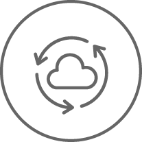

IT Management
Constant Coverage | Enhanced Performance
We’re experts in our industry so you can be leaders in yours
IT Managed Services
L3 offers companies a full-service worry-free way to implement a technology infrastructure that optimizes business needs with proactive support that ensures your systems are always up and running.
Learn More
Service Operations
Free up time and resources for your IT team by utilizing L3 Networks for tasks that are tedious and time-consuming or complex and outside the scope of your existing capabilities.
Learn More
IT Managed Services
The cornerstone of L3 Networks IT Managed Services advantage is our ability to align your business with best practice technology. We look at your entire infrastructure, identify potential problems, and provide best-fit solutions to ensure every aspect of your IT Infrastructure is supporting your business needs.
Our strategically designed solutions and reliable 24/7 support optimize the performance of your operation, and through diligent monitoring and response checks, incidents are remediated before impacting end-user experience.

Why choose L3 Networks’ IT Managed Services over the competition?
Rapidly Resolve Problems
24/7 coverage supported by certified engineers gives you access across all international time zones. Clients receive the right priority response to all IT requests based on business needs and service impact.
Constant Coverage
Active monitoring and management to identify and limit service impact to your business is key to maintaining IT services that underpin the applications that run your business.
De-Escalate Your Risks
Validating technology changes to Production IT systems and services can be layered with risks that are hard to identify without L3’s team of technical experts available to assess tertiary impact, associated costs, regression plans and risk implications.
Peace of Mind Data Protection
Retention and backing up of data is vital to business operations. L3 Networks provides continuous management of data replication and backup systems as part of its proactive approach to protection in the event of a failure or disaster.
Asset Intelligence
L3 includes business operations tools to help manage your IT assets, including lifecycle history, vendor support information, configuration details, and relational information in order to bring efficiency to your coverage.
Unbiased Vendor Decisions
Unlike other firms, L3 Networks has no profit incentives to sell you hardware or software. That allows us to advocate for our clients with each vendor in an unbiased way, ensuring the right technology purchase decisions and support commitments are made.
Worry-free Management
Monthly reporting, quarterly service reviews, and ongoing service management gives clients a transparent look at the cost-value of L3 Networks’ performance, activities, and services.
Clear Cut Pricing
Within a well-defined operating framework, management becomes predictable and helps you stay on budget by eliminating hidden IT costs.

L3 Networks is an important business partner for us the Constant Coverage service keeps our company running 24/7. The guys at L3 are available day or night and are just a phone call away when we need assistance. They have been managing our IT for the last 9 years as we've grown our business to over 150 employees and three locations.
Orlando Wong, Vice President, Able Freight
Service Operations
Free up time and resources for your IT team by utilizing L3 Networks for tasks that are tedious and time-consuming or complex and outside the scope of your existing capabilities. Our fixed cost service operations save companies money by mitigating overtime costs your IT team would incur from off-hours activities or the training required for out of the ordinary tasks.


Reliable Execution And Complete Visibility
L3 approaches technology management from the perspective of a business partner. That means everything we do ensures the best outcome for your company. Our experts always follow best practices for completing daily tasks with diligence and transparency. Work activities are performed securely and outcomes are reported to keep you up-to-date.
Improved Operational Efficiencies
Rely on L3’s deep expert intuition covering all IT disciplines. Third-party support has proven to minimize downtime and increase operational continuity because processes are streamlined and managed proactively by experts who deal exclusively with IT every day.
Complementary Capabilities
One of L3 Networks’ greatest advantages is the versatility it offers businesses. Some companies prefer that their IT staff deal only with network and infrastructure management and therefore need a partner to handle help desk and user support. For others it’s just the opposite. L3 technology specialists have the skills needed to handle simple and advanced levels of service, plus they have strong people skills for employee or customer interaction.
 IT ManagementManaged Services
Service Operations
Cloud ServicesPrivate Cloud
Cloud Integration
SecuritySecurity Assessments
Threat Management
End Point Security
Vulnerability Assessments
Data ProtectionRemote Backup
Disaster Recovery
CompanyAbout Us
Contact Us
IT ManagementManaged Services
Service Operations
Cloud ServicesPrivate Cloud
Cloud Integration
SecuritySecurity Assessments
Threat Management
End Point Security
Vulnerability Assessments
Data ProtectionRemote Backup
Disaster Recovery
CompanyAbout Us
Contact Us